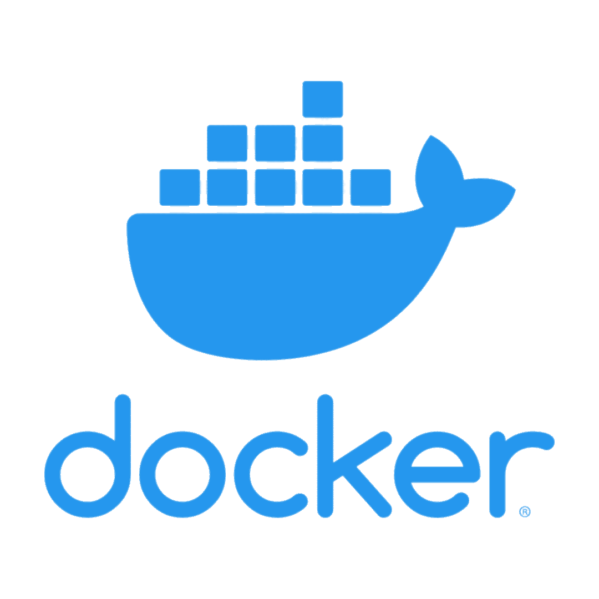
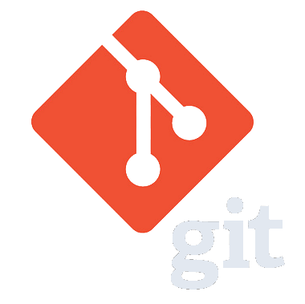
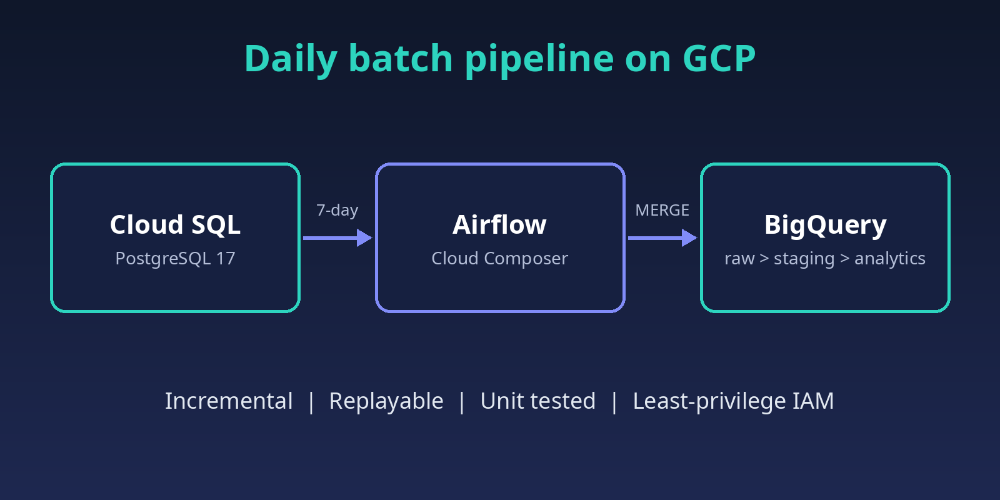

About me
François Dumont
Data Engineer
Python | Airflow | SQL | Docker
I am a data engineer and a former construction project manager (about 10 years of experience in the building industry). I retrained through the Data Engineer program at Diginamic (Montpellier, 2024-2026), after discovering Python on my own in 2023.
I build data pipelines with Python, Airflow, SQL, Docker and cloud tools, and I like clear code and simple architectures.
I also worked on LLM and RAG projects at Altup Conseil.
contact : fra_dumont@hotmail.com
Crypto Trading Data Pipeline



Crypto Trading Data Pipeline is a Dockerized data engineering project
that collects and serves market data for cryptocurrencies.
Apache Airflow 3.4 orchestrates two pipelines:
a per-minute collector and a daily incremental collector.
Recent data is stored in PostgreSQL, while the long-term history lives in partitioned Parquet files.
Pipelines include automatic retries, deduplication, and dynamic task mapping (one task per trading pair).
A FastAPI service exposes candles and the latest price per coin.
Chess games project
This chess data project extracts, loads, and transforms data from my Chess.com games
to showcase my data engineering skills using free tools:
Apache Airflow, Databricks Community Edition (working around its constraints), and dbt.
Rather than building an over-engineered, production-grade pipeline,
my focus is on clear code, sound architecture choices, and practical problem-solving.
To highlight versatility across stacks,
I implement the core transformations in both Databricks (Apache Spark) and dbt (PostgreSQL).
Google Cloud pipeline
E-commerce batch

Google Cloud : Cloud SQL, BigQuery, Cloud Composer (Airflow), Cloud Storage, IAM | Python, SQL, pytest
My end-of-training project: a daily, incremental and replayable batch pipeline
that moves e-commerce data from a PostgreSQL database (Cloud SQL) to BigQuery.
Airflow on Cloud Composer re-reads a 7-day window and loads it with a load job and a MERGE,
so a replay never creates duplicates or overwrites newer data.
Setup is scripted with gcloud, secrets stay out of the code, and the core logic is unit tested.
Exhaustive RAG

Mistral LLM, Llama Index
A RAG system for construction contractual documents.
It combines structured output, OCR, chapter-based chunking, metadata enhancement, reranking and vector storage.
I also contributed a fix upstream to LlamaIndex.
And more
My SQL and Pandas practice, my BI work, and the projects I built on my own while learning.
- © FD30
- Design: HTML5 UP